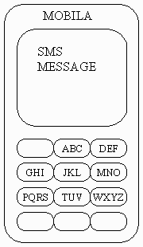

Задача B. SMS

Сообщения SMS сотового телефона MOBILA составлены из прописных латинских букв.
Если буква первая на кнопке, нужно нажать эту кнопку один раз, чтобы добавить
букву в сообщение. Если буква вторая - нужно нажать кнопку дважды и т.д. Так,
чтобы набрать слово "SMS", нужно нажать
(PQRS)(PQRS)(PQRS)(PQRS)(MNO)(PQRS)(PQRS)(PQRS)(PQRS)
Чтобы ввести две буквы, находящиеся на одной кнопке, нужно между нажатиями
клавиши сделать паузу. Например, чтобы ввести сообщение "AA", нужно нажать
(ABC)(пауза)(ABC)
Если на кнопке три буквы, то, как только такая кнопка нажата три раза,
последняя буква добавляется в сообщение немедленно, а следующие нажатия той же
кнопки относятся к следующей букве сообщения. Аналогично, если на кнопке четыре
буквы, то после четырёх нажатий в сообщение будет добавлена последняя буква.
То есть последовательность нажатий
(ABC)(ABC)(ABC)(ABC)(пауза)(ABC)
соответствует сообщению "CAA". К сожалению, сотовые телефоны этой модели
давно не производятся, и остался только один такой телефон. Он может
произвольно вставлять и игнорировать паузы во время ввода сообщения, что может
привести к некоторым изменениям в сообщениях. Например, введя
MOSCOWQUARTERFINAL, можно получить вместо этого OMSCMNWQTTARTERPDEINAL. Вы
получили SMS-сообщение и знаете, что оригинальное сообщение содержало
N букв. Чтобы определить вероятность угадывания оригинального сообщения,
найдите число возможных сообщений, которые могли превратиться в то, которое
Вы получили.
Ограничения: 1 <= N <= 80,
полученное сообщение состоит только из прописных латинских букв,
длина полученного сообщения - от 1 до 80 букв, время 2 с.
Ввод из файла sms.in. В первой строке задана длина оригинального
сообщения N. Вторая строка содержит полученное SMS-сообщение.
Вывод в файл sms.out. Вывести число сообщений из N букв,
которые, будучи набранными на на этом телефоне, могут превратиться в данное
сообщение.
Примеры
Ввод 1 Ввод 2 Ввод 3
4 2 80
MAMA WWW QUARTERFINAL
Вывод 1 Вывод 2 Вывод 3
1 2 0